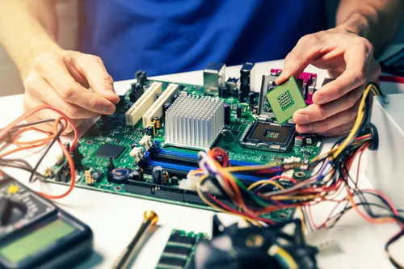
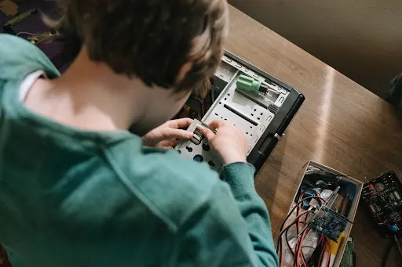

Eksplorasi Materi Teknologi
Pelajari dasar-dasar dunia digital secara mendalam.

Hardware
Lihat Detail & Contoh →Jaringan & Internet
Lihat Detail & Contoh →
Mengenal Komponen Hardware, Sejarah Internet, dan Dasar Pemrograman.
Pelajari dasar-dasar dunia digital secara mendalam.


Selesaikan kuis di bawah ini untuk melihat skor langsung.